Field picker when the vault list fails: 1280 and 400 px
Disposable pictures from a running isolated Paseo (own home, port 7391, fake op and security). Today = origin/main 6709c72 as it is; proposed = the same plus candidate.diff. Proposed-design pictures: proposed-*.png.
Today: the list call timed out (100 items, 1.5 s per fake op call)
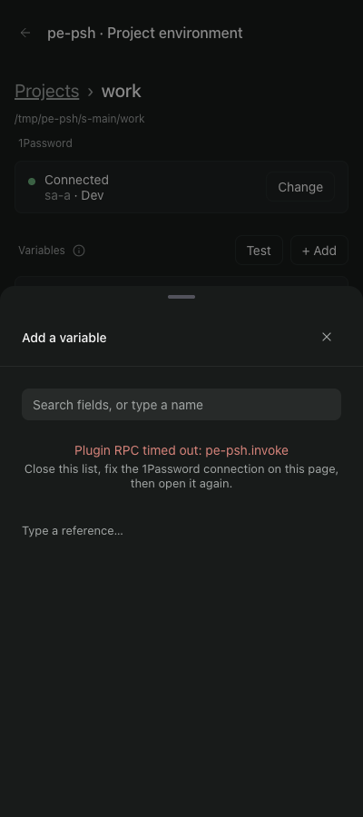
Proposed: the list call timed out, same run
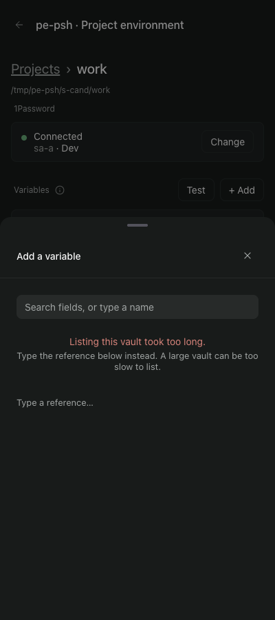
Proposed: next step operated, 1280 (reference typed, then Use pressed)
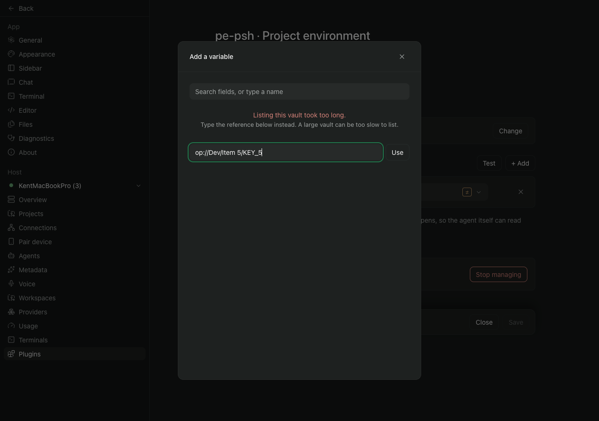
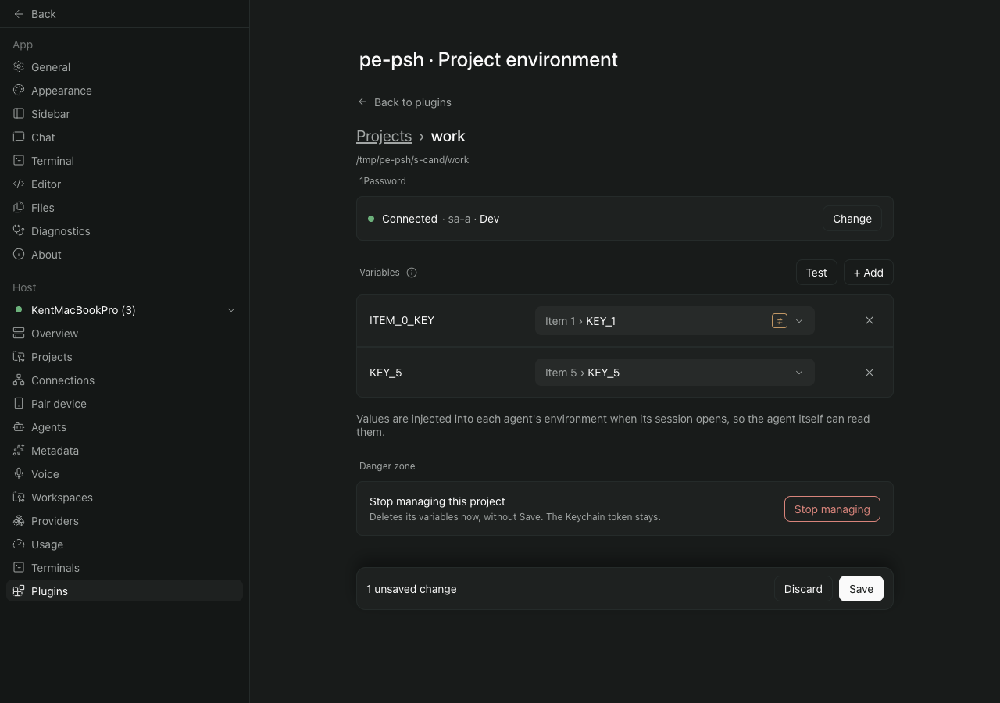
Proposed: the other next steps, 1280 (search box types a name; reference row empty, outside the vault, malformed, valid) and 400 (valid)
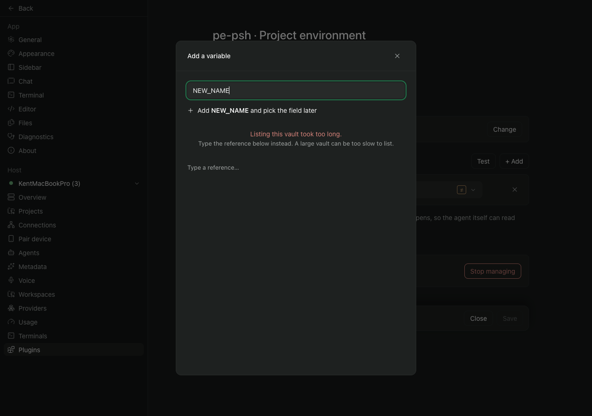
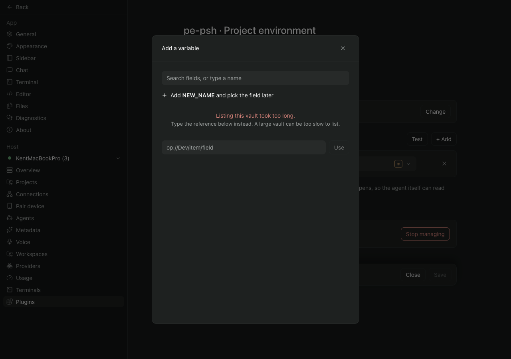
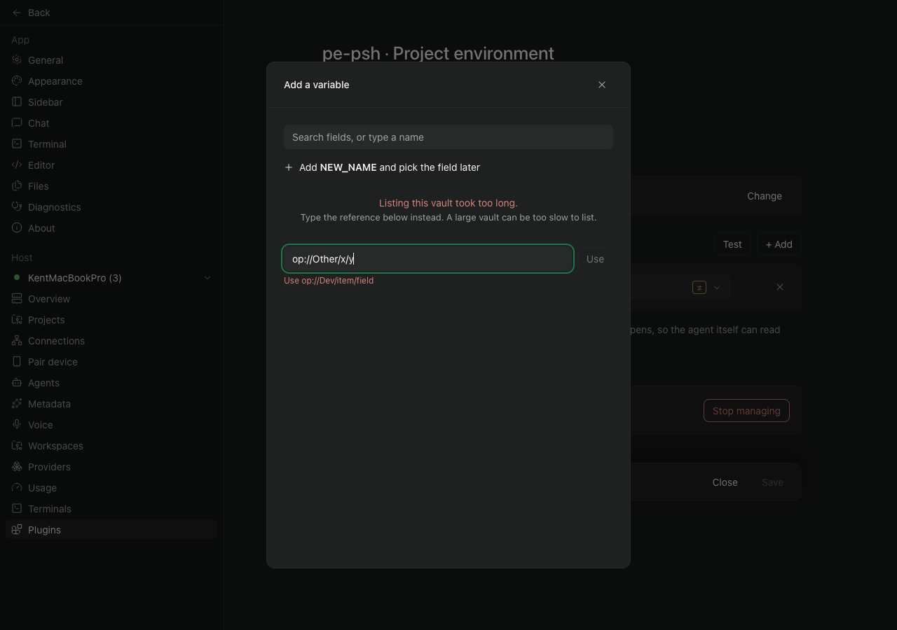
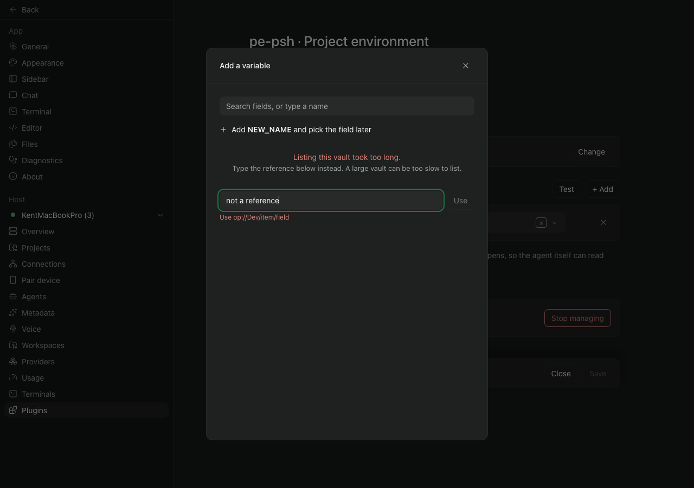
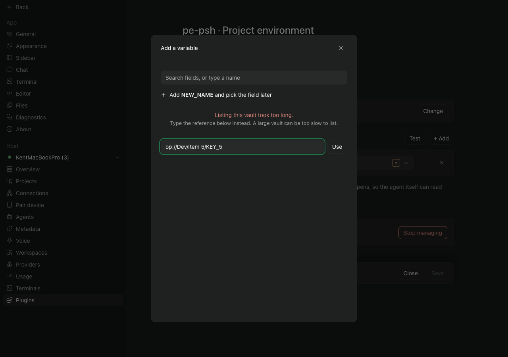
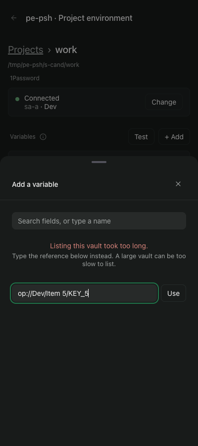
Today and proposed, connection failure (fake op fails with a network error): the same words

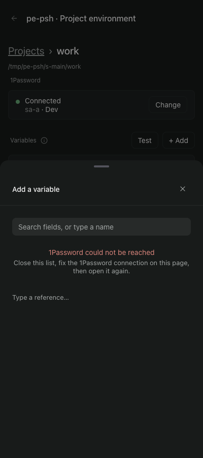
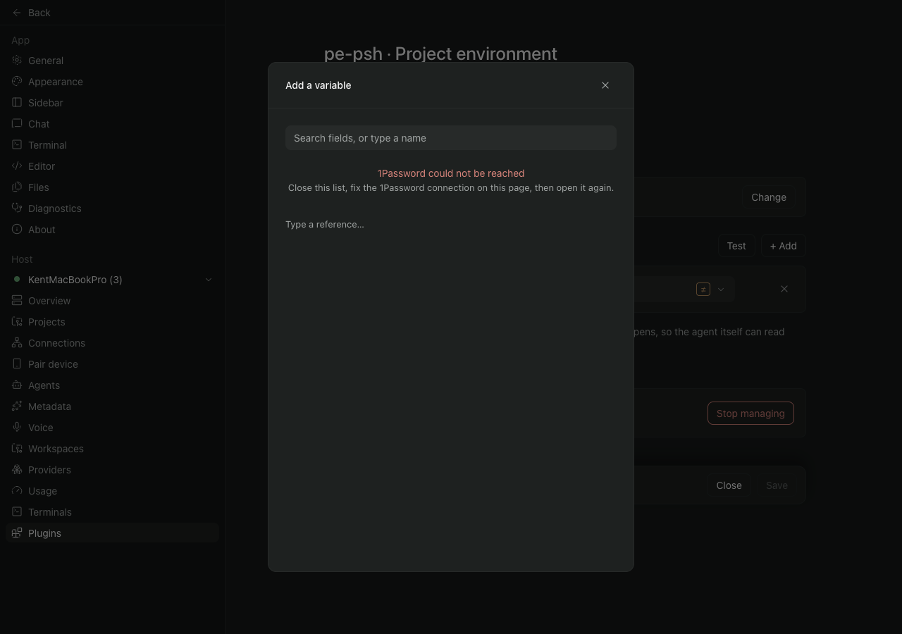